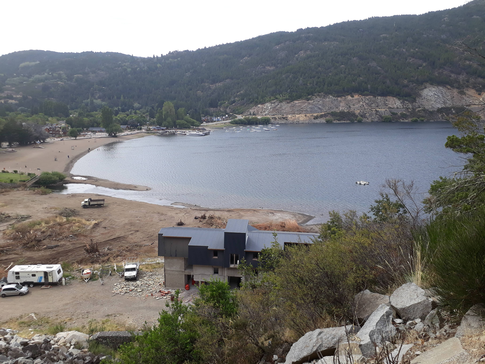
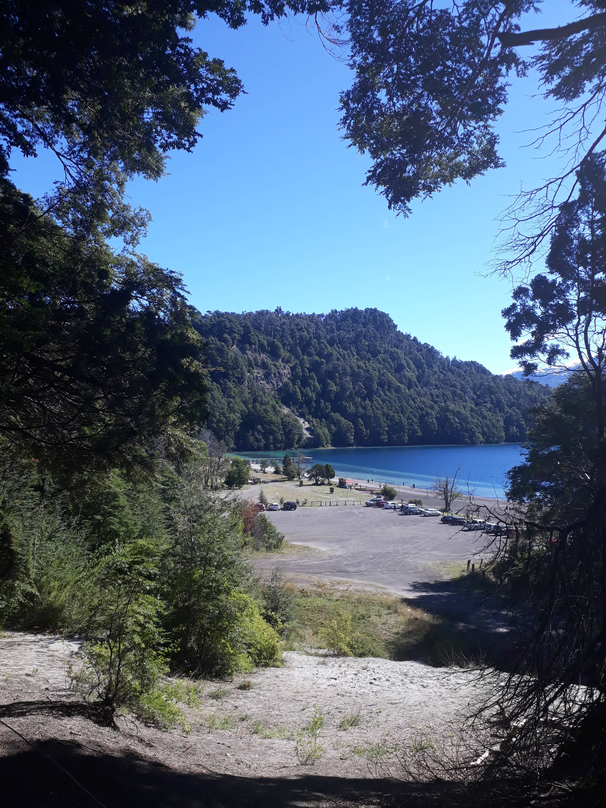
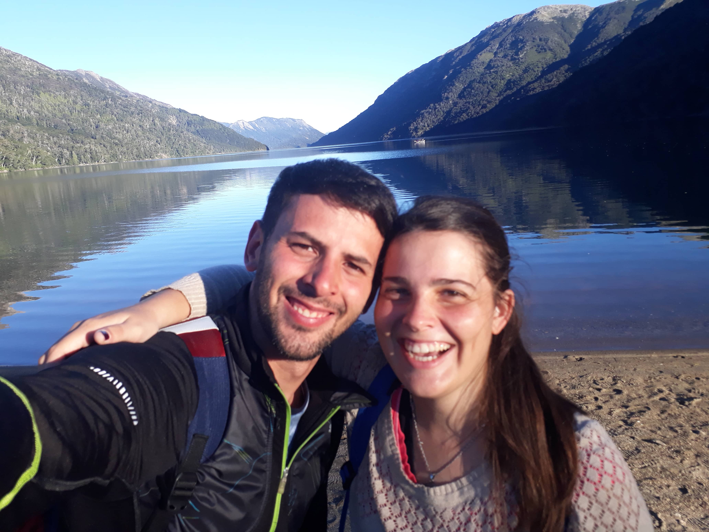

Cuando faltaba una semana para arrancar mi viaje a la Patagonia le comente a un amigo que me interesaba hacer una breve reseña de las playas que iba a conocer. El me planteó si son verdaderamente playas las del sur argentino. Y no solo que son playas, sino de las mejores del mundo y con un concepto muy distinto a la costa argentina, a algunas playas brasileras y a las del caribe. Playa, por definición, es una extensión casi plana de arena o rocas que baña un mar, río o lago.
En nuestro "Surtrip", recorrimos junto con @Mechi San Martín de los Andes, Bariloche y Villa la Angostura. La primera es una ciudad pequeña entre montañas, un paraíso de chocolates y cerveza. Es, al menos para mi, la mas hermosa de las que conocí en la Patagonia. Eso si, es cara, como lo es todo el sur. Villa La Angostura, es un lugar que creció mucho en los últimos años, es también un pueblo pequeño pero muy pintoresco, con una avenida principal llena de locales y galerías amaderadas y con una cafetería que simula ser un vagoncito de un tren. Bariloche, es la ciudad del recuerdo, recuerdos del viaje de egresados, recuerdo el campamento que realizamos a la montaña en 4to año, pero recuerdo principalmente a Mamushcka, la mejor chocolatería del universo.
En todo el viaje, hicimos una sola excursión que hace mucho queríamos hacer: ¡Rafting! Vale la pena totalmente. Fue literalmente una nueva aventura y otra forma de conectar con la naturaleza.
Era el mediodía del 6 de marzo de 2017 y habíamos pisado con Mechi la terminal de buses de San Martín de los Andes, nos paso a buscar Gustavo, el inquilino que nos alquilo su casa por airbnb. El departamento una maravilla, muy recomendable y a buen precio. Después de acomodarnos salimos a pasear y decidimos comprar unos sanguchitos de miga en "La Modelo".
Esa riquísima comida se volvió todavía mas deliciosa cuando llegamos a la costa del Lago Lacar, todo nuevo para mi, ¿Una playa con rocas? ¿Se anda descalzo? ¿Se usa maya? ¿Nos podemos meter al agua? La respuesta es si, si a todo. La gente actúa como en cualquier otra playa y es cierto, el agua es fría, pero totalmente disfrutable dependiendo la etapa del año en la que vayan.
Ese almuerzo fue definitivamente mágico, veníamos de Bariloche donde había tocado un día de frío y viento tremendo y de repente estábamos en remera, con el jogging arremangado y descalzos disfrutando de un sol pleno y unos riquísimos sanguchitos.
Vista del Lago Lácar desde el comienzo del camino al Mirador Bandurrias.
Esta playa tiene muchas peculiaridades, las principales son que para llegar hay que hacer un camino de aproximadamente dos horas de ida y una hora y media de vuelta (el primer tramo es en subida y el segundo en bajada). Además, la playa se encuentra resguardada por lo tanto corre poco viento. Un amigo que vive allí nos contó que es una de las playas con temperaturas mas alta de la zona.
El camino para llegar a la Islita tiene una parada en el mirador Bandurrias, sinceramente es inexplicable lo que se observa desde ahí. Arriba, en la portada, podrán ver la foto de nuestros piesitos desde el mirador y sacar sus propias conclusiones.
Al llegar a la playa, nos dimos cuenta que la Islita estaba enfrente, se llama así, porque tiene una superficie alejada de la costa, a unos 50 metros, lo cual torna necesario cruzar el agua para llegar. Nos miramos con Mechi y sin dudar mucho nos metimos al Lago Lácar acompañando a los pocos visitantes que se encontraban en la zona. De esta manera, cruzamos a la famosa Islita. Un imperdible de San Martín de los Andes, no solo por la playa sino por el camino para llegar a ella.
Un colectivo nos dejo en Lolog, al bajar nos dimos cuenta que la lluvia que caía y el viento que soplaba iban a ser nuestros únicos compañeros. El lugar era totalmente fantasma y el único restaurante que había estaba cerrado.
Caminamos unos 500 metros desde donde nos dejo el bondi y llegamos a Playa Bonita, inmensa, con un paisaje hermoso y lo mas lindo que estábamos solos, toda la costa para nosotros. El viento soplaba de manera constante y muy fuerte, por eso, solo estuvimos un rato. Luego fuimos a perdernos por los alrededores del Lago Lolog, una experiencia hermosa donde también conocimos la costa de una laguna verde muy pequeña y dos perritos a los cuales apodamos "Bongo y Betún". Si, como no había ningún ser humano cerca empezamos a hablar con los perros, así somos Mechi y Yo. El sur te pone un poco loco.
Pasando el mediodía, pudimos ver que al fin había abierto el restaurante y terminamos comiendo, tomando café y jugando al chinchón refugiados al lado de un calentador a leña. Obviamente gané yo.
Playa del Lago Correntoso
Desde la terminal de Villa la Angostura podemos llegar a muchísimos lugares, uno de ellos es Lago Correntoso. Era la mañana y el colectivo nos dejo en la ruta, donde el chófer nos indico la entrada hacia el Lago Correntoso. Cuando se ingresa, hay un "Camino de pescadores" que lleva a una playa del Lago Nahuel Huapi, ahí aprovechamos para hacer las mil y una fotos y visitar un muelle con una vista muy buena del Lago. Luego nos adentramos en el bosque bordeando el Río Correntoso, una delicia de la naturaleza, Arrayanes, río y una muy buena compañía de dos "abuelas aventureras". Estaban llegando a los 70 años pero iban vestidas de running y sabían absolutamente todos los caminos. Ellas nos explicaron como hacer para llegar a la verdadera playa del Lago Correntoso.
Tras un camino de unos diez minutos llegamos a lo que pensamos que no íbamos a llegar, al paraíso terrenal que existe en el sur, la playa que mas me gusto, la de Lago Correntoso. Rocas muy pequeñas que simulan arena, agua turquesa que no tiene nada que envidiarle al Caribe y montañas nevadas de fondo. Algo único. Además, la playa cuenta con un parador, donde comimos un sanguchito de milanesa a un valor un poco caro.
En la tarde, después de conocer Lago Correntoso, teníamos la vara muy alta y nos dirigimos a Lago Espejo sin tantas expectativas. Nuevamente nos equivocamos y la playa de Lago Espejo fue desconcertante. La segunda mas hermosa, luego de Lago Correntoso. El paisaje es entre montañas, una costa muy amplia con agua totalmente cristalina y un muelle imponente donde se puede ver el lago de una forma increíble. Para llegar allí hay que hacer una caminata, de unos diez minutos aproximadamente, la cual nos regala una de las vistas mas lindas del lago (la de la foto).
Vista del Lago Espejo desde el sendero de entrada a la playa.
Era el último día de vacaciones, plenamente soleado y nos quedaban muchas cosas por hacer. Arrancamos bien temprano para la terminal, donde un colectivo nos llevaría a dos playas hermosísimas que rodean el impactante Bosque de Arrayanes, el cual se encontraba cerrado por el mal clima de los días pasados. ¡No se preocupen! Pueden ver arrayanes en varios lugares de Villa La Angostura, como por ejemplo, el camino que bordea al Río Correntoso. El viaje se puede pagar en efectivo en el bus o comprar la tarjeta que venden en la terminal. Bahía Brava y Bahía Mansa son dos playas que se encuentran continuas e inmersas en una zona hotelera, al menos así lo publicitan desde la secretaría de turismo. Esa mañana pasamos casi una hora entre playa y playa quedandonos atónitos por la belleza con la que el sol rebotaba en el agua totalmente cristalina, un momento mágico para desconectar con absolutamente todo. Estas dos playas tienen la ventaja de quedar cerca del centro, lo cual facilita muchísimo su acceso. Aproximadamente el colectivo tarda entre 10 y 15 minutos en llegar.
El colectivo nos dejó nuevamente en la terminal y nos tomamos otro bus que nos llevó hacia la entrada de la Cascada Ñivinco. Los micros funcionan de la siguiente manera, uno dice donde se baja y donde lo tienen que recoger, luego, resta confiar en el chófer para ver si uno se queda varado hasta el día siguiente o no. Al llegar a la cascada sucedió algo inesperado, vimos que el acceso estaba cerrado por una valla, habíamos hecho un esfuerzo muy grande para llegar hasta donde estábamos y nos íbamos a quedar con las ganas ¡Qué bronca! Dudé un montón, ¿Qué íbamos a hacer casi 8 horas en la ruta solos? Mi principal miedo era que este muy crecida la cascada por las lluvias y esto represente un verdadero peligro para Mechi y para mi. De repente, ella sacó un espíritu aventurero que jamás le había visto y me dijo: ¡Vamos amor! No fuimos conscientes y no recomiendo hacer este tipo de cosas, pero algo en mi dijo: "lo tienen que hacer". Por suerte, no nos equivocamos, Ñivinco posee un camino de ingreso increíble, rodeado de una vegetación exuberante y con senderos muy estrechos, lo cual nos hizo sentir inmersos en las profundidades de la Patagonia. Al llegar a la cascada nos sentimos verdaderamente realizados, no solo por el lugar, sino porque nos habíamos animado a hacer una locura. En si, no fue peligroso, aunque cada paso que dábamos lo hacíamos con miedo. ¡Ah, eso sí, cuídense de las chaquetas que están por todos lados!
La visitamos en dos horas y media y faltaban 5hs para que nuestro micro pase por donde habíamos acordado. Decidimos volver a la ruta y esperar ahí. Al llegar, apareció un paisano con boina y nos empezó a hablar, nos dijo que se llamaba "Elvio, el mejor nombre del mundo" y luego de llamarme Pascual y Patricia a Mechi nos dijo que nos podía llevar a "Pichi Traful" por 200 pesos (valor del 2017). Le ofrecimos 100 y nos llevo rezongando todo el viaje, pero agradeciendo al turismo ya que era su fuente de trabajo. Nos dejo en la entrada del lago en medio de la ruta y nos dijo que el colectivo de vuelta paraba enfrente pero que hagamos señas y mas señas para que nos vean , ya que el chófer no sabia que estaríamos esperando ahí.
Nos adentramos en el camino hacia al lago y luego de unos 2km, donde vimos vacas, ovejas y todo tipo de animales de granja, llegamos a un camping donde nos recibieron un joven y una joven, re relajados, que nos contaron un poco como era la zona. El resto de la tarde disfrutamos de lectura, caminata y una hermosa vista del lago Pichi Traful. La peculiaridad mas linda es que tiene el fondo de color rojizo y nadie supo explicarnos del todo porque, algunos dicen que por los movimientos volcánicos.
Finalmente pudimos llegar a donde paraba el colectivo, hacer todas las señas posibles y regresar a casa para disfrutar de unas pizzas caseras y nuestra última noche en el sur.
Playa del Lago Traful en el Camping "Pichi Traful".
Creo que el sur nos hizo crecer, perder el miedo a hacer dedo, a ir con la mochila pateando y pateando, nos enseñó a salir del confort y a disfrutar de lo simple. El sur nos hizo un poco más mochileros.